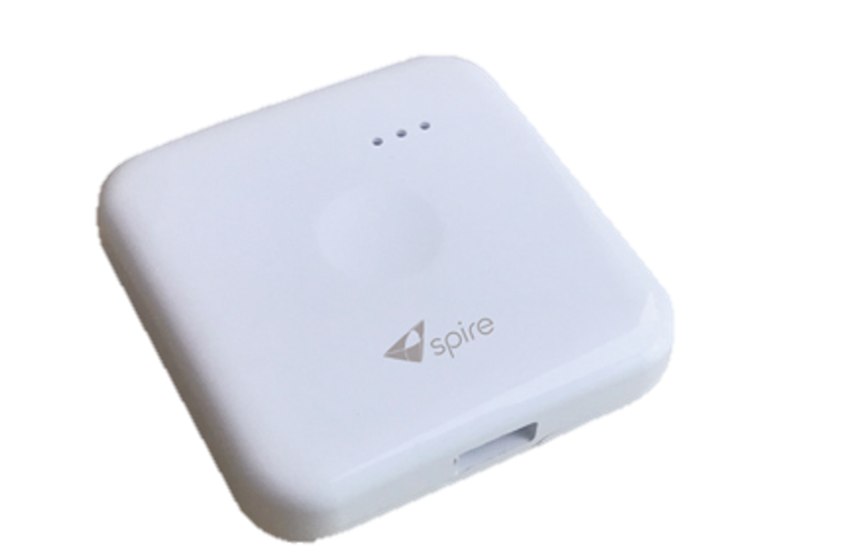
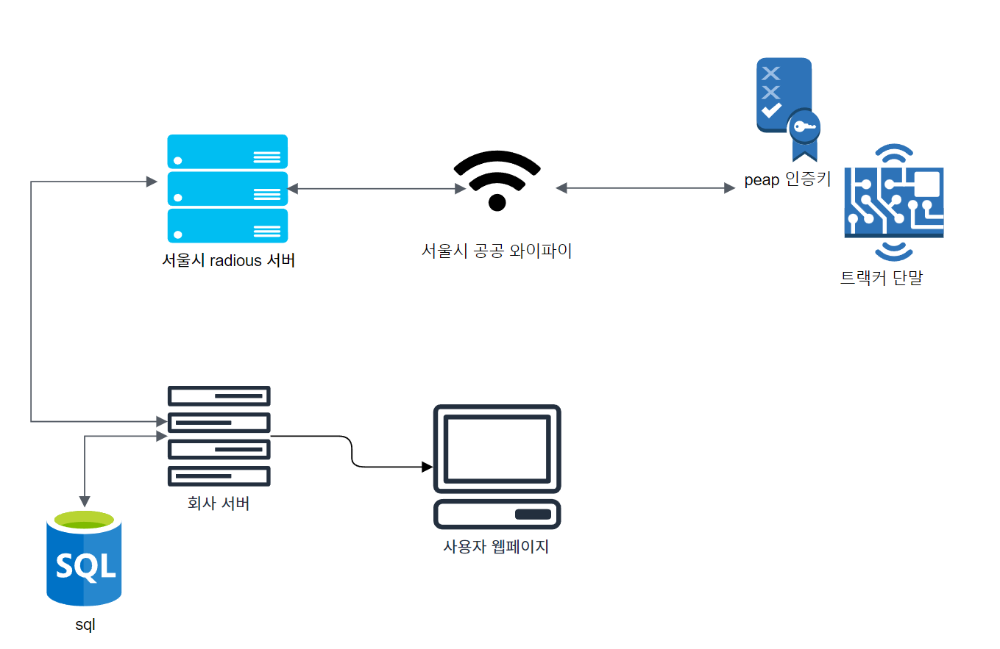

서울시 공공 와이파이 트랙커
주요기능 :
서울시 공공 와이파이 트랙커 단말로 주변 와이파이를 스캔하여 데이터를 서버로 전송
와이파이 위치로 실종자 위치 확인 시스템

나의 역할 :
- 명령어 데이터 처리
-> usb로 입력되는 AT command 처리 기능 구현. 사용자가 입력하는
설정 값(wifi 설정, 목적 IP) 저장 인터페이스 함수 구성
- usb 충전 인터럽트 기능
-> usb pin들어오는 hight 신호를 인터럽트 처리
인터럽트 hight 이후 adc 측정으로 단말의 배터리 잔량 led 표시
- peap 서버 테스트 구성
-> 서울시에서 사용하고 있는 peap wifi 서버를 테스트를 위해 라즈베리 환경에 구성
Freeradius 사용한 peap 서벙 구성
- nvm3 저장 기능 분석 및 구성
-> Silicon Labs에서 개발한 비휘발성 메모리 관리 시스템 nvm3의 활영 방법을 공부하고 사용.
repacking 기술을 이용한 데이터 관리